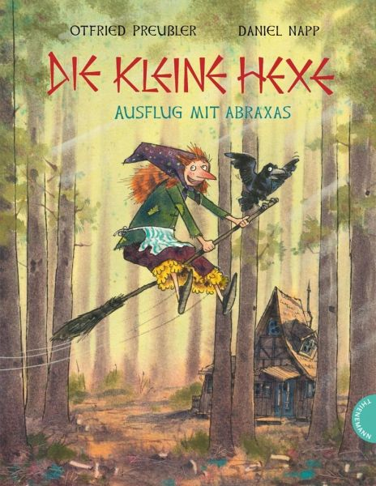

0
стр. з
0
сторінок

завантаження...

Отфрид Пройслер
Маленькая ведьма
Пособие подготовила Ирина Зверинская
Метод чтения Ильи Франка
Inhalt
Die kleine Hexe hat ÄrgerHeia, WalpurgisnachtRachepläneFühren Sie Besen?Gute VorsätzeWirbelwindVorwärts, mein SöhnchenPapierblumenEine saftige LehreFreitagsgästeDas leicht verhexte SchützenfestDer MaronimannBesser als sieben RöckeSchneemann, Schneemann, braver MannWollen wir wetten?Fastnacht im WaldeDer KegelbruderFestgehext!Vor dem HexenratWer zuletzt lacht...
Vor dem Hexenrat
(перед советом ведьм; die Hexe – ведьма, der Rat – совет)
1 Das Hexenjahr neigte sich langsam dem Ende zu (ведьмин год медленно подходил к концу; sich dem Ende zuneigen, sich zuneigen – склоняться; neigen – нагибать, склонять), die Walpurgisnacht rückte näher und näher (Вальпургиева ночь придвигалась ближе и ближе; nahe – близкий). Jetzt wurde es Ernst für die kleine Hexe (теперь для маленькой ведьмы это стало серьезным = дело приняло серьезный оборот; der Ernst – серьезность). Sie wiederholte in diesen Tagen gewissenhaft alles (она добросовестно повторяла в эти дни все; das Gewissen – совесть), was sie gelernt hatte (что она выучила). Noch einmal ging sie das Hexenbuch Seite für Seite durch (еще раз прошла = просмотрела она страницу за страницей ведьмину книгу; durchgehen, gehen - ging - gegangen; die Seite – страница). Es klappte mit ihrer Hexerei (с ее колдовством дело шло = колдовство шло) wie am Schnürchen (как по маслу: «как по шнурочку»; die Schnur – шнур).
2 Drei Tage vor der Walpurgisnacht (за три дня до Вальпургиевой ночи) kam die Muhme Rumpumpel geritten (прискакала тетка Румпумпель; reiten - ritt - geritten – ездить верхом). Sie stieg aus der schwarzen Wolke (она выбралась из черной тучи; steigen - stieg - gestiegen) und sagte (и сказала): "Ich komme im Auftrag der Oberhexe (я /прибыла/ по поручению главной ведьмы) und lade dich vor den Hexenrat (и вызываю тебя на совет ведьм). Übermorgen um Mitternacht (послезавтра в полночь) ist die Prüfung (экзамен). Dann sollst du am Kreuzweg hinter dem roten Stein in der Heide sein (тогда ты должна быть на перекрестке за красным камнем в вересковой пустоши; der Kreuzweg, das Kreuz – крест, der Weg – дорога). – Du brauchst aber, wenn du es dir überlegt haben solltest, auch nicht zu kommen (но тебе, если бы ты хорошенько подумала: «если случится так, что ты над этим поразмыслишь», и приходить не нужно; sich überlegen – обдумывать; solltest du das tun … – если выйдет так, что ты это сделаешь…) ..."
3 "Da gibt es doch gar nichts zu überlegen (тут, однако, совсем нечего: «не имеется совсем ничего» обдумывать)!", sagte die kleine Hexe.
4 "Wer weiß (кто знает)?", entgegnete achselzuckend die Hexe Rumpumpel (возразила ведьма Румпумпель, пожимая плечами; die Achsel – плечо, zucken – подергивать). "Vielleicht (может быть) ist es trotzdem klüger (/будет/ все же разумнее; klug – умный, разумный), wenn du daheim bleibst (если ты останешься дома; das Heim – дом). Ich werde dich gern bei der Oberhexe entschuldigen (я охотно попрошу главную ведьму освободить тебя /от экзамена/; entschuldigen – просить освободить/от чего-либо: «извинять»/)."
5 "So (/ах,/ так)?", rief die kleine Hexe (крикнула маленькая ведьма; rufen - rief - gerufen). "Das glaube ich (в это я верю = я думаю!)! Aber ich bin nicht so dumm (но я не так глупа), wie du meinst (как ты полагаешь)! Ich lasse mir keine Angst machen (я не позволю нагнать на меня страх = не дам меня напугать)!"
6 "Wem nicht zu raten ist (кому /нельзя/ советовать = кто не слушает совета)", sagte die Muhme Rumpumpel, "dem ist auch nicht zu helfen (тому и не поможешь). Dann also bis übermorgen (тогда до послезавтра)!" –
7 Der Rabe Abraxas hätte die kleine Hexe am liebsten (охотнее всего; gern - lieber - am liebsten) auch diesmal (и в этот раз) begleitet (сопровождал бы маленькую ведьму). Aber er hatte im Hexenrat nichts verloren (но на совете ведьм ему нечего было делать: «он ничего /там/ не потерял»; verlieren - verlor - verloren – терять). Er musste zu Hause bleiben (он должен был остаться дома) und wünschte der kleinen Hexe (пожелал маленькой ведьме), als sie sich auf den Weg machte (когда она отправилась в путь), alles Gute (всего хорошего).
8 "Lass dich nicht einschüchtern (не дай себя запугать)!", rief er beim Abschied (крикнул он при расставании; der Abschied). "Du bist eine gute Hexe geworden (ты стала хорошей ведьмой; werden - wurde - geworden) und das ist die Hauptsache (и это – главное; das Haupt – глава, die Sache – вещь)!"
1 Das Hexenjahr neigte sich langsam dem Ende zu, die Walpurgisnacht rückte näher und näher. Jetzt wurde es Ernst für die kleine Hexe. Sie wiederholte in diesen Tagen gewissenhaft alles, was sie gelernt hatte. Noch einmal ging sie das Hexenbuch Seite für Seite durch. Es klappte mit ihrer Hexerei wie am Schnürchen.
2 Drei Tage vor der Walpurgisnacht kam die Muhme Rumpumpel geritten. Sie stieg aus der schwarzen Wolke und sagte: "Ich komme im Auftrag der Oberhexe und lade dich vor den Hexenrat. Übermorgen um Mitternacht ist die Prüfung. Dann sollst du am Kreuzweg hinter dem roten Stein in der Heide sein. – Du brauchst aber, wenn du es dir überlegt haben solltest, auch nicht zu kommen ..."
3 "Da gibt es doch gar nichts zu überlegen!", sagte die kleine Hexe.
4 "Wer weiß?", entgegnete achselzuckend die Hexe Rumpumpel. "Vielleicht ist es trotzdem klüger, wenn du daheim bleibst. Ich werde dich gern bei der Oberhexe entschuldigen."
5 "So?", rief die kleine Hexe. "Das glaube ich! Aber ich bin nicht so dumm, wie du meinst! Ich lasse mir keine Angst machen!"
6 "Wem nicht zu raten ist", sagte die Muhme Rumpumpel, "dem ist auch nicht zu helfen. Dann also bis übermorgen!" –
7 Der Rabe Abraxas hätte die kleine Hexe am liebsten auch diesmal begleitet. Aber er hatte im Hexenrat nichts verloren. Er musste zu Hause bleiben und wünschte der kleinen Hexe, als sie sich auf den Weg machte, alles Gute.
8 "Lass dich nicht einschüchtern!", rief er beim Abschied. "Du bist eine gute Hexe geworden und das ist die Hauptsache!"
1 Schlag zwölf (ровно в двенадцать; der Schlag – бой/часов/, schlagen – бить, ударять) kam die kleine Hexe am Kreuzweg hinter dem roten Stein in der Heide an (прибыла маленькая ведьма на перекресток...; ankommen, kommen - kam - gekommen). Der Hexenrat war schon versammelt (совет ведьм был уже собран; versammeln – собирать). Außer der Oberhexe (кроме главной ведьмы) gehörten dazu (в состав /совета/ входили; gehören /zu/ – относиться/к/) eine Wind- , eine Wald- , eine Nebelhexe (одна ветряная, одна лесная, одна туманная ведьма; der Nebel – туман) und auch von den anderen Hexenarten je eine (а также по одной из других пород ведьм; die Art – вид, порода; je ein [zwei, drei ит.д.] – по одному [по два, по три]). Die Wetterhexen (погодные ведьмы; das Wetter – погода) hatten die Muhme Rumpumpel geschickt (прислали тетку Румпумпель). Das konnte der kleinen Hexe nur recht sein (это могло быть для маленькой ведьмы только кстати). Sie war ihrer Sache sicher (она была уверена в успехе своего дела; seiner Sache sicher sein) und sagte sich (и сказала себе): Die wird platzen vor Ärger (она /тетка Румпумпель/ лопнет от злости), wenn ich die Prüfung bestehe (если я выдержу экзамен) und morgen mit auf den Blocksberg darf (и завтра смогу = мне позволят /полететь/ вместе /со всеми/ на Блоксберг)!
2 "Fangen wir an (начнем; anfangen)!", rief die Oberhexe, "und prüfen wir (и проверим), was die kleine Hexe gelernt hat (чему маленькая ведьма научилась)!"
3 Nun stellten die Hexen (теперь ставили = задавали ведьмы) der Reihe nach (по очереди; die Reihe – ряд) ihre Aufgaben (свои задачи; die Aufgabe): Wind machen (сделать ветер), Donnern lassen (выпустить гром; der Donner), den roten Stein in der Heide weghexen (околдовать прочь /чтобы исчез/ красный камень...), Hagel und Regen heraufbeschwören (вызвать град и дождь; der Hagel, der Regen; beschwören – заклинать) – es waren keine besonders schwierigen Dinge (это были не особенно трудные вещи). Die kleine Hexe geriet nicht ein einziges Mal in Verlegenheit (ни одного единственного раза не попала в затруднительное положение; in Verlegenheit geraten, die Verlegenheit – затруднение, verlegen – смущенный; geraten – попасть /в какую-либо ситуацию/, очутиться). Auch als die Muhme Rumpumpel (и когда тетка Румпумпель) von ihr verlangte (потребовала от нее): "Hexe das (наколдуй то), was auf Seite dreihundertvierundzwanzig im Hexenbuch steht (что стоит = написано на странице триста двадцать четыре колдовской книги)!", war die kleine Hexe sofort im Bild (сразу была в курсе дела = знала, о чем она говорит; das Bild – картина). Sie kannte das Hexenbuch in- und auswendig (она знала колдовскую книгу наизусть; etwas in- und auswendig kennen; inwendig – внутренний, auswendig – внешний, наизусть; kennen - kannte - gekannt – знать).
4 "Bitte sehr!", sagte sie ruhig und hexte das (сказала она спокойно и наколдовала то), was auf Seite dreihundertvierundzwanzig im Hexenbuch steht (что стоит на странице...): ein Gewitter mit Kugelblitz (грозу с шаровой молнией; das Gewitter; der Kugelblitz, die Kugel – шар, der Blitz – молния).
5 "Das genügt (этого достаточно)!", rief die Oberhexe. "Du hast uns gezeigt (ты показала нам), dass du hexen kannst (что умеешь колдовать). Ich erlaube dir also (итак, я разрешаю тебе), obwohl du noch reichlich jung bist (хотя ты еще довольно молода), in Zukunft (в будущем; die Zukunft) auf der Walpurgisnacht mitzutanzen (на Вальпургиеву ночь танцевать вместе /со всеми/). – Oder ist jemand im Hexenrat anderer Meinung (или кто - нибудь в совете ведьм другого мнения; anderer Meinung sein)?"
6 Die Hexen stimmten ihr zu (ведьмы согласились с ней; zustimmen). Nur die Muhme Rumpumpel entgegnete (возразила): "Ich!"
7 "Was hast du dagegen einzuwenden (что ты имеешь возразить против этого = какие у тебя возражения; einwenden)?", fragte die Oberhexe. "Bist du mit ihrer Hexenkunst etwa unzufrieden (разве ты недовольна ее колдовским мастерством; die Kunst – мастерство, искусство)?"
8 "Das nicht (это - то нет)", versetzte die Muhme Rumpumpel (возразила). "Sie ist aber trotzdem (но все же она), wie ich beweisen kann (как я могу доказать), eine schlechte Hexe (плохая ведьма)!" Sie kramte aus ihrer Schürzentasche ein Heft hervor (она вытащила на свет Божий из кармана своего фартука тетрадь; hervorkramen; die Schürze – фартук, die Tasche – карман; der Kram – хлам; скарб, пожитки; kramen – рыться, шарить, перебирать, hervor – наружу). "Ich habe sie (я за ней) während des ganzen Jahres (в течение всего года) heimlich beobachtet (тайно наблюдала). Was sie getrieben hat (/то,/ чем она занималась; treiben - trieb - getrieben), habe ich aufgeschrieben (я записывала; aufschreiben; schreiben - schrieb - geschrieben – писать). Ich werde es vorlesen (я это зачитаю)."
9 "Lies es nur ruhig vor (читай только спокойно = пожалуйста, читай; lesen)!", rief die kleine Hexe, "Wenn es nicht lauter Lügen sind (если это не сплошная ложь; lauter – сплошь; die Lüge – ложь), habe ich nichts zu befürchten (мне нечего опасаться)!"
10 "Das wird sich herausstellen (это выяснится)!", sagte die Muhme Rumpumpel. Dann las sie dem Hexenrat vor (потом она зачитала совету ведьм; vorlesen – читать в слух; lesen - las - gelesen – читать), was die kleine Hexe (что маленькая ведьма) im Lauf dieses Jahres (в течение этого года; der Lauf – бег, течение /времени/) getan hatte (совершила; tun - tat - getan): Wie sie den Klaubholzweibern geholfen (как она помогла сборщицам дров; helfen - half - geholfen; klauben – собирать, das Holz – дрова, das Weib – женщина) und wie sie den bösen Förster kuriert hatte (и как она «вылечила» злого лесничего); die Geschichten (истории) vom Blumenmädchen (о продавщице цветов), vom Bierkutscher (о развозчике пива) und vom Maronimann (и о продавце каштанов) brachte sie auch vor (она тоже привела; vorbringen – высказывать, произносить; bringen - brachte - gebracht – приносить, приводить); vom Ochsen Korbinian (о быке Корбиниане), dem die kleine Hexe das Leben gerettet hatte (которому маленькая ведьма спасла жизнь), vom Schneemann (о снеговике) und von den Eierdieben (и о похитителях яиц) erzählte sie gleichfalls (она тоже рассказала).
11 "Vergiss nicht den Schindelmacher (не забудь кровельщика; vergessen – забывать)!", sagte die kleine Hexe. "Den habe ich auch zur Vernunft gebracht (которого я тоже образумила: «привела к рассудку»)!"
1 Schlag zwölf kam die kleine Hexe am Kreuzweg hinter dem roten Stein in der Heide an. Der Hexenrat war schon versammelt. Außer der Oberhexe gehörten dazu eine Wind - , eine Wald - , eine Nebelhexe und auch von den anderen Hexenarten je eine. Die Wetterhexen hatten die Muhme Rumpumpel geschickt. Das konnte der kleinen Hexe nur recht sein. Sie war ihrer Sache sicher und sagte sich: Die wird platzen vor Ärger, wenn ich die Prüfung bestehe und morgen mit auf den Blocksberg darf!
2 "Fangen wir an!", rief die Oberhexe, "und prüfen wir, was die kleine Hexe gelernt hat!"
3 Nun stellten die Hexen der Reihe nach ihre Aufgaben: Wind machen, Donnern lassen, den roten Stein in der Heide weghexen, Hagel und Regen heraufbeschwören – es waren keine besonders schwierigen Dinge. Die kleine Hexe geriet nicht ein einziges Mal in Verlegenheit. Auch als die Muhme Rumpumpel von ihr verlangte: "Hexe das, was auf Seite dreihundertvierundzwanzig im Hexenbuch steht!", war die kleine Hexe sofort im Bild. Sie kannte das Hexenbuch in - und auswendig.
4 "Bitte sehr!", sagte sie ruhig und hexte das, was auf Seite dreihundertvierundzwanzig im Hexenbuch steht: ein Gewitter mit Kugelblitz.
5 "Das genügt!", rief die Oberhexe. "Du hast uns gezeigt, dass du hexen kannst. Ich erlaube dir also, obwohl du noch reichlich jung bist, in Zukunft auf der Walpurgisnacht mitzutanzen. – Oder ist jemand im Hexenrat anderer Meinung?"
6 Die Hexen stimmten ihr zu. Nur die Muhme Rumpumpel entgegnete: "Ich!"
7 "Was hast du dagegen einzuwenden?", fragte die Oberhexe. "Bist du mit ihrer Hexenkunst etwa unzufrieden?"
8 "Das nicht", versetzte die Muhme Rumpumpel. "Sie ist aber trotzdem, wie ich beweisen kann, eine schlechte Hexe!" Sie kramte aus ihrer Schürzentasche ein Heft hervor. "Ich habe sie während des ganzen Jahres heimlich beobachtet. Was sie getrieben hat, habe ich aufgeschrieben. Ich werde es vorlesen."
9 "Lies es nur ruhig vor!", rief die kleine Hexe, "Wenn es nicht lauter Lügen sind, habe ich nichts zu befürchten!"
10 "Das wird sich herausstellen!", sagte die Muhme Rumpumpel. Dann las sie dem Hexenrat vor, was die kleine Hexe im Lauf dieses Jahres getan hatte: Wie sie den Klaubholzweibern geholfen und wie sie den bösen Förster kuriert hatte; die Geschichten vom Blumenmädchen, vom Bierkutscher und vom Maronimann brachte sie auch vor; vom Ochsen Korbinian, dem die kleine Hexe das Leben gerettet hatte, vom Schneemann und von den Eierdieben erzählte sie gleichfalls.
11 "Vergiss nicht den Schindelmacher!", sagte die kleine Hexe. "Den habe ich auch zur Vernunft gebracht!"
1 Sie hatte erwartet (она ожидала), dass sich die Muhme Rumpumpel nach besten Kräften bemühen würde (что тетка Румпумпель приложит все усилия; sich nach Kräften bemühen; die Kraft – сила), sie schlecht zu machen (/чтобы/ сделать ей плохо). Stattdessen (вместо этого) las sie aus ihrem Merkheft nur Gutes vor (она зачитывала из своей тетради для записей только хорошее; das Merkheft – тетрадь для записей, merken – замечать, das Heft – тетрадь; das Gute – добро, хорошее).
2 "Stimmt das auch (и это верно = правда)?", fragte die Oberhexe (спрашивала главная ведьма) nach jeder Geschichte (после каждой истории).
3 "Jawohl (конечно)!", rief die kleine Hexe, "es stimmt!" – und war stolz darauf (и была горда этим; stolz sein auf etwas – гордиться чем-либо).
4 In ihrer Freude (в своей радости) entging es ihr (от нее ускользнуло = она не заметила; entgehen) ganz und gar (совершенно), dass die Oberhexe (что главная ведьма) von Mal zu Mal (с каждым разом: «от раза к разу») strenger fragte (спрашивала строже; streng – строгий). Sie merkte auch nicht (она и не замечала), dass die übrigen Hexen (что прочие ведьмы) bedenklich (обеспокоенно) und immer bedenklicher (и все обеспокоеннее) mit den Köpfen wackelten (качали головами). Wie erschrak sie daher (как она испугалась поэтому; erschrecken - erschrak - erschrocken), als plötzlich die Oberhexe entrüstet ausrief (когда неожиданно главная ведьма возмущенно выкрикнула; ertrüsten – возмущать; ausrufen):
5 "Und so etwas (и такой) hätte ich morgen Nacht (я завтра ночью) um ein Haar (почти: «на волосок») auf den Blocksberg gelassen (позволила /прилететь/ на Блоксберг)! Pfui Rattendreck (тьфу, крысиный помет; die Ratte – крыса, der Dreck), welch eine schlechte Hexe (какая плохая ведьма)!"
6 "Wieso denn (как же так)?", fragte die kleine Hexe betroffen (растерянно; betreffen – поражать, treffen - traf - getroffen – встретить). "Ich habe doch immer nur Gutes gehext (я же колдовала всегда только хорошее; das Gute)!"
7 "Das ist es ja (в том - то и дело: «это есть оно ведь»)!", fauchte die Oberhexe (прошипела, фыркнула /как кошка/). "Nur Hexen (только ведьмы), die immer und allezeit (которые всегда и в любое время) Böses hexen (колдуют злое; das Böse – зло), sind gute Hexen (являются хорошими ведьмами)! Du aber bist eine schlechte Hexe (ты же – плохая ведьма), weil du (так как ты) in einem fort (беспрерывно) Gutes gehext hast (колдовала хорошее)!"
8 "Und außerdem (и кроме того)", klatschte die Muhme Rumpumpel (насплетничала) – "außerdem hat sie auch einmal am Freitag gehext (кроме того, она однажды и в пятницу колдовала)! Sie tat es zwar hinter verschlossenen Fensterläden (она делала это, правда, за закрытыми ставнями; tun - tat - getan; der Fensterladen, das Fenster – окно, der Laden – ставень), aber ich habe zum Schornstein hineingeschaut (но я заглянула через дымовую трубу)."
9 "Wie?!", schrie die Oberhexe (крикнула; schreien - schrie - geschrien), "das auch noch (еще и это)!"
10 Sie packte die kleine Hexe mit ihren Spinnenfingern (она схватила маленькую ведьму своими паучьими пальцами; die Spinne – паук, der Finger – палец) und zauste sie an den Haaren (и вцепилась ей в волосы: «трепала ее за волосы»). Da stürzten auch alle übrigen Hexen (тут набросились и все остальные ведьмы) mit wildem Geheul (с диким воем; das Geheul) auf das arme Ding (на бедную девчонку) und verbläuten es(и избили ее /до синяков/; blau – синий) mit den Besenstielen (палками от метел; der Besenstiel, der Besen – метла, der Stiel – рукоятка). Sie hätten die kleine Hexe wohl krumm und lahm geschlagen (они, пожалуй, избили бы маленькую ведьму до полусмерти; jemanden krumm und lamm schlagen; krumm – кривой, lahm – хромой, обессиленный), wenn nicht die Oberhexe nach einer Weile gerufen hätte (если бы главная ведьма через некоторое время не крикнула):
11 "Genug jetzt (достаточно теперь)! Ich weiß eine bessere Strafe für sie (я знаю более хорошее наказание для нее; gut - besser - best)!"
12 Hämisch befahl sie der kleinen Hexe (злорадно приказала она маленькой ведьме; befehlen - befahl - befohlen): "Du wirst auf dem Blocksberg das Holz für das Hexenfeuer zusammentragen (ты соберешь на Блоксберге дрова для костра ведьм; zusammentragen – сносить в одно место). Du ganz allein (ты, совсем одна)! Bis morgen um Mitternacht (до завтрашней полуночи) musst du den Scheiterhaufen errichtet haben (ты должна соорудить костер; der Scheiterhaufen, das Scheit – полено, der Haufen – куча). Wir werden dich dann in der Nähe an einen Baum binden (потом мы привяжем тебя поблизости к дереву), wo du die ganze Nacht stehen und zuschauen sollst (где ты должна будешь всю ночь стоять и смотреть), wie wir anderen tanzen (как мы, другие, танцуем)!"
13 "Und wenn wir die ersten paar Runden getanzt haben (а когда мы станцуем первые пару кругов; die Runde – круг)", hetzte die Muhme Rumpumpel (науськивала), "dann gehen wir hin (мы пойдем туда) zu der kleinen Kröte (к наглой девчонке; die Kröte – жаба) und rupfen ihr (и общипаем ей) einzeln (по отдельности) die Haare vom Kopf (/все/ волосы с головы)! Das wird lustig (это будет весело)! Das gibt einen Spaß für uns (это доставит нам удовольствие)! An diese Walpurgisnacht (об этой Вальпургиевой ночи) wird sie noch lange denken (она будет еще долго помнить)!"
1 Sie hatte erwartet, dass sich die Muhme Rumpumpel nach besten Kräften bemühen würde, sie schlecht zu machen. Stattdessen las sie aus ihrem Merkheft nur Gutes vor.
2 "Stimmt das auch?", fragte die Oberhexe nach jeder Geschichte.
3 "Jawohl!", rief die kleine Hexe, "es stimmt!" – und war stolz darauf.
4 In ihrer Freude entging es ihr ganz und gar, dass die Oberhexe von Mal zu Mal strenger fragte. Sie merkte auch nicht, dass die übrigen Hexen bedenklich und immer bedenklicher mit den Köpfen wackelten. Wie erschrak sie daher, als plötzlich die Oberhexe entrüstet ausrief:
5 "Und so etwas hätte ich morgen Nacht um ein Haar auf den Blocksberg gelassen! Pfui Rattendreck, welch eine schlechte Hexe!"
6 "Wieso denn?", fragte die kleine Hexe betroffen. "Ich habe doch immer nur Gutes gehext!"
7 "Das ist es ja!", fauchte die Oberhexe. "Nur Hexen, die immer und allezeit Böses hexen, sind gute Hexen! Du aber bist eine schlechte Hexe, weil du in einem fort Gutes gehext hast!"
8 "Und außerdem", klatschte die Muhme Rumpumpel – "außerdem hat sie auch einmal am Freitag gehext! Sie tat es zwar hinter verschlossenen Fensterläden, aber ich habe zum Schornstein hineingeschaut."
9 "Wie?!", schrie die Oberhexe, "das auch noch!"
10 Sie packte die kleine Hexe mit ihren Spinnenfingern und zauste sie an den Haaren. Da stürzten auch alle übrigen Hexen mit wildem Geheul auf das arme Ding und verbläuten es mit den Besenstielen. Sie hätten die kleine Hexe wohl krumm und lahm geschlagen, wenn nicht die Oberhexe nach einer Weile gerufen hätte:
11 "Genug jetzt! Ich weiß eine bessere Strafe für sie!"
12 Hämisch befahl sie der kleinen Hexe: "Du wirst auf dem Blocksberg das Holz für das Hexenfeuer zusammentragen. Du ganz allein! Bis morgen um Mitternacht musst du den Scheiterhaufen errichtet haben. Wir werden dich dann in der Nähe an einen Baum binden, wo du die ganze Nacht stehen und zuschauen sollst, wie wir anderen tanzen!"
13 "Und wenn wir die ersten paar Runden getanzt haben", hetzte die Muhme Rumpumpel, "dann gehen wir hin zu der kleinen Kröte und rupfen ihr einzeln die Haare vom Kopf! Das wird lustig! Das gibt einen Spaß für uns! An diese Walpurgisnacht wird sie noch lange denken!"
Wer zuletzt lacht...
(... кто смеется последним)
1 "Ich Unglücksrabe (я, несчастный; der Unglücksrabe – неудачник, несчастливец; das Glück – счастье, удача)!", stöhnte der brave Abraxas (стонал добрый Абраксас), als ihm die kleine Hexe erzählt hatte (когда маленькая ведьма рассказывала ему), wie es ihr auf dem Kreuzweg hinter dem roten Stein in der Heide ergangen war (как ей пришлось на перекрестке...; jemandem es ergehen; gehen - ging - gegangen). "Ich bin schuld daran (я виноват в этом; schuld sein /an/)! Ich – und sonst keiner (я – и никто другой: «никто кроме»)! Nur ich habe dir geraten (только я тебе советовал; raten - riet - geraten), immerfort Gutes zu hexen (постоянно колдовать хорошее)! Ach, wenn ich dir wenigstens helfen könnte (если бы я тебе, по меньшей мере, мог помочь; wenig – мало)!"
2 "Das muss ich wohl selber tun (это я должна, пожалуй, сама сделать; selber = selbst, selber – сам)", sagte die kleine Hexe. "Ich weiß noch nicht, wie ... (я еще не знаю, как ...) Aber dass ich mich nicht an den Baum binden lasse (но /то,/ что я не позволю привязать себя к дереву), das weiß ich (это я знаю)!"
3 Sie lief in die Stube (она побежала в комнату; laufen - lief - gelaufen) und holte das Hexenbuch (и достала колдовскую книгу) aus dem Tischkasten (из ящика стола; der Tisch, der Kasten). Eifrig begann sie (усердно начала она; beginnen - begann - begonnen) darin zu blättern (в ней /в книге/ перелистывать страницы = листать ее; das Blatt – лист).
4 "Nimmst du mich mit (ты возьмешь меня с собой; mitnehmen)?", bat Abraxas (просил; bitten - bat - gebeten).
5 "Wohin (куда)?"
6 "Auf den Blocksberg (на Блоксберг)! Ich möchte dich heute Nacht nicht allein lassen (я не хотел бы тебя сегодня ночью оставлять одну)."
7 "Abgemacht (решено; abmachen – договариваться)", sagte die kleine Hexe. "Ich nehme dich mit (я возьму тебя с собой; mitnehmen). Aber nur unter einer Bedingung (но только при одном условии): Du musst jetzt den Schnabel halten (ты должен теперь клюв удерживать = держать закрытым = помалкивать) und darfst mich nicht stören (и не должен мне мешать)!"
8 Abraxas verstummte (умолк). Die kleine Hexe vertiefte sich in das Hexenbuch (углубилась в колдовскую книгу; sich vertiefen). Von Zeit zu Zeit (время от времени) brummte sie etwas (она что - то бормотала). Der Rabe verstand es nicht (ворон этого не понимал; verstehen; stehen - stand - gestanden – стоять), aber er hütete sich (но остерегался; sich hüten), sie zu fragen (ее спрашивать).
9 Das ging bis zum Abend so fort (так продолжалось до вечера; fortgehen). Dann erhob sich die kleine Hexe (потом маленькая ведьма поднялась; sich erheben, heben - hob - gehoben – поднимать) und sagte:
10 "Jetzt habe ich's (сейчас у меня это есть = теперь я знаю, что делать)! – Reiten wir nun auf den Blocksberg (едем верхом = летим теперь на Блоксберг)!"
11 Noch war auf dem Blocksberg nichts von den anderen Hexen zu sehen (на Блоксберге еще вовсе не было видно других ведьм). Die mussten die Mitternachtsstunde abwarten (они должны были поджидать полуночного часа; die Mitternacht – полночь, die Mitte – середина, die Nacht – ночь, die Stunde – час), ehe (прежде, чем) sie auf die Besen steigen und herreiten durften (им можно будет взобраться на метлы и приехать сюда верхом). So schrieb es der Hexenbrauch für die Walpurgisnacht vor (так предписывал это ведьмин обычай для Вальпургиевой ночи; vorschreiben – предписывать; schreiben - schrieb - geschrieben – писать).
12 Die kleine Hexe setzte sich auf den Gipfel des Berges (села = опустилась на вершину горы; sich setzen – садиться) und streckte die Beine aus (и вытянула ноги; ausstrecken).
13 "Willst du nicht anfangen (ты не собираешься начать)?", fragte Abraxas.
14 "Anfangen (начать)?", meinte die kleine Hexe. "Womit (с чем = что)?" "Mit dem Holzsammeln (со сбором дров = собирать дрова; das Holz – дрова, sammeln – собирать)! – Sollst du denn nicht (разве ты не должна) einen Scheiterhaufen zusammentragen (собрать = сложить костер; der Scheiterhaufen, das Scheit – полено, der Haufen – куча)?"
15 "Hat Zeit (время есть = спешить некуда; die Zeit)!", rief die kleine Hexe (крикнула маленькая ведьма; rufen - rief - gerufen) und grinste (и ухмыльнулась).
16 Abraxas entgegnete (возразил): "Aber es ist doch schon eine Stunde auf Mitternacht (но ведь уже /остался только/ час до полуночи)! Eben (только что) hat es im Tal unten elf geschlagen (внизу в долине пробило одиннадцать; das Tal; schlagen - schlug - geschlagen – бить)!"
17 "Es wird auch halb zwölf schlagen (пробьет и половина двенадцатого)", sagte die kleine Hexe. "Verlass dich darauf (положись на то = поверь), dass der Holzhaufen rechtzeitig fertig wird (куча из дров своевременно будет готова; das Holz, der Haufen; recht – правильный, die Zeit – время)."
18 "Hoffen wir's (будем надеяться на это)!", krächzte Abraxas. Die kleine Hexe mit ihrer Ruhe (от маленькой ведьмы с ее спокойствием) wurde ihm langsam unheimlich (ему постепенно становилось жутко). Wenn das nur gut ging (если /бы/ это только хорошо прошло)!
1 "Ich Unglücksrabe!", stöhnte der brave Abraxas, als ihm die kleine Hexe erzählt hatte, wie es ihr auf dem Kreuzweg hinter dem roten Stein in der Heide ergangen war. "Ich bin schuld daran! Ich – und sonst keiner! Nur ich habe dir geraten, immerfort Gutes zu hexen! Ach, wenn ich dir wenigstens helfen könnte!"
2 "Das muss ich wohl selber tun", sagte die kleine Hexe. "Ich weiß noch nicht, wie ... Aber dass ich mich nicht an den Baum binden lasse, das weiß ich!"
3 Sie lief in die Stube und holte das Hexenbuch aus dem Tischkasten. Eifrig begann sie darin zu blättern.
4 "Nimmst du mich mit?", bat Abraxas.
5 "Wohin?"
6 "Auf den Blocksberg! Ich möchte dich heute Nacht nicht allein lassen."
7 "Abgemacht", sagte die kleine Hexe. "Ich nehme dich mit. Aber nur unter einer Bedingung: Du musst jetzt den Schnabel halten und darfst mich nicht stören!"
8 Abraxas verstummte. Die kleine Hexe vertiefte sich in das Hexenbuch. Von Zeit zu Zeit brummte sie etwas. Der Rabe verstand es nicht, aber er hütete sich, sie zu fragen.
9 Das ging bis zum Abend so fort. Dann erhob sich die kleine Hexe und sagte:
10 "Jetzt habe ich's! – Reiten wir nun auf den Blocksberg!"
11 Noch war auf dem Blocksberg nichts von den anderen Hexen zu sehen. Die mussten die Mitternachtsstunde abwarten, ehe sie auf die Besen steigen und herreiten durften. So schrieb es der Hexenbrauch für die Walpurgisnacht vor.
12 Die kleine Hexe setzte sich auf den Gipfel des Berges und streckte die Beine aus.
13 "Willst du nicht anfangen?", fragte Abraxas.
14 "Anfangen?", meinte die kleine Hexe. "Womit?" "Mit dem Holzsammeln! – Sollst du denn nicht einen Scheiterhaufen zusammentragen?"
15 "Hat Zeit!", rief die kleine Hexe und grinste.
16 Abraxas entgegnete: "Aber es ist doch schon eine Stunde auf Mitternacht! Eben hat es im Tal unten elf geschlagen!"
17 "Es wird auch halb zwölf schlagen", sagte die kleine Hexe. " Verlass dich darauf, dass der Holzhaufen rechtzeitig fertig wird."
18 "Hoffen wir's!", krächzte Abraxas. Die kleine Hexe mit ihrer Ruhe wurde ihm langsam unheimlich. Wenn das nur gut ging!
1 Im Tal unten schlug es halb zwölf (в долине внизу пробило полдвенадцатого; schlagen - schlug - geschlagen).
2 "Beeile dich (торопись; sich beeilen)!", drängte Abraxas (торопил; drängen – напирать; торопить). "Nur eine halbe Stunde noch (только полчаса еще /осталось/)!"
3 "Mir genügt eine Viertelstunde (мне достаточно и четверти часа; das Viertel – четверть, die Stunde)", antwortete die kleine Hexe.
4 Als es drei viertel schlug (когда пробило без четверти /двенадцать/: «три четверти»; schlagen - schlug - geschlagen), war sie mit einem Satz auf den Beinen (одним прыжком она вскочила на ноги: «была на ногах»). "Jetzt geht es ans Holzsammeln (теперь соберем дрова: «дело идет к сбору дров»)!", rief sie (крикнула она) und sprach einen Hexenspruch (и произнесла колдовское заклинание; sprechen - sprach - gesprochen).
5 Da kam es von allen Seiten herbeigeflattert (тут со всех сторон стало прилетать /порхая/; flattern – порхать). Es krachte und knallte und klapperte (трещало, и хлопало, и громыхало). Holterdiepolter (трах - тарарах)! fiel es herunter (падало сюда вниз; fallen - fiel - gefallen) und türmte sich übereinander (и громоздилось друг на друга; sich türmen; der Turm – башня) auf einen Haufen (/собираясь/ в кучу).
6 "Oho!", rief Abraxas. "Was sehe ich (что я вижу)? Sind das nicht Besen (не метлы ли это)?"
7 "Jawohl (да, конечно), es sind Besen (это метлы) – die Hexenbesen der großen Hexen (колдовские метлы взрослых ведьм)! Ich habe sie allesamt auf den Blocksberg gehext (я наколдовала, /чтобы/ они все вместе /прибыли/ на Блоксберг). Und dieser (а эта), der lange da (длинная вот тут), ist der Besen der Oberhexe (метла главной ведьмы)."
8 "Was – bedeutet das (что это означает)?", fragte der Rabe Abraxas erschrocken (испуганно; erschrecken - erschrak - erschrocken – пугаться).
9 "Ich werde sie anzünden (я их подожгу)", sagte die kleine Hexe. "Was meinst du wohl (как ты полагаешь: «что ты, пожалуй, думаешь»), wie sie brennen werden (как они будут гореть)! Jetzt brauche ich aber (теперь же, мне нужна) auch noch Papier dazu (для этого еще и бумага; das Papier)."
10 Sie sprach einen zweiten Spruch (она произнесла второе заклинание; sprechen).
11 Nun erhob sich ein Rauschen (теперь поднялся шелест; das Rauschen; sich erheben) und Brausen (и шум; das Brausen) am Himmel (в небе; der Himmel). Wie Scharen von riesigen Fledermäusen (как стаи громадных летучих мышей; die Schar – стая; die Fledermaus) schwebte es flügelschlagend über die Wälder heran (понеслось это, махая крыльями, над лесами сюда), auf den Gipfel zu (на вершину).
12 "Immer herbei (все сюда)!", rief die kleine Hexe, "und husch (и живо)! auf den Besenhaufen (на груду метел)!"
13 Es waren die Hexenbücher der großen Hexen (это были колдовские книги взрослых ведьм). Die kleine Hexe hatte sie herbefohlen (маленькая ведьма направила их сюда; befehlen - befahl - befohlen – приказывать).
14 "Was tust du nur (что же ты делаешь)!", kreischte Abraxas (визжал). "Die großen Hexen werden dich umbringen (большие ведьмы тебя убьют)!"
15 "Kaum (едва ли)!", rief die kleine Hexe und sagte den dritten Spruch.
16 Dieser dritte Spruch war der beste (было наилучшим). Sie hexte damit den großen Hexen das Hexen ab (она отколдовала = отучила этим /заклинанием/ взрослых ведьм от колдовства; abhexen). Nun konnte nicht eine von ihnen (теперь ни одна из них не могла) mehr hexen (больше колдовать)! Und da (а так как) sie auch keine Hexenbücher mehr hatten (и никаких колдовских книг у них больше не было), so waren sie außerstande (то они были не в состоянии; außer – вне, der Stand – положение, состояние), es jemals wieder zu lernen (этому когда - нибудь снова научиться).
17 Im Tal schlug es Mitternacht (в долине пробило полночь; schlagen).
18 "So", rief die kleine Hexe zufrieden (крикнула маленькая ведьма удовлетворенно), "jetzt wollen wir anfangen (теперь мы начнем)! Heia, Walpurgisnacht!"
19 Mit dem Feuerzeug (зажигалкой; das Feuerzeug, das Feuer – огонь, das Zeug – принадлежность), das sie beim Billigen Jakob gekauft hatte (которую она купила у Дешевого Якоба), steckte sie Besen und Hexenbücher in Brand (она подожгла метлы и колдовские книги; etwas in Brand stecken – поджигать что-либо, der Brand – горение, пожар, stecken – втыкать).
20 Es wurde ein Hexenfeuer (это стало = получился колдовской огонь), wie es nicht schöner sein konnte (прекраснее которого не могло быть; schön – прекрасный). Prasselnd und knatternd (потрескивая и хлопая) schlugen die Flammen zum Himmel (пламя выбивалось в небо; die Flamme – пламя; die Flammen – языки пламени).
21 Bis in die Morgenstunden (до утренней поры; der Morgen – утро, die Stunde – час) umtanzte die kleine Hexe (танцевала маленькая ведьма), allein mit dem Raben Abraxas (одна с вороном), den lodernden Scheiterhaufen (вокруг полыхающего костра; lodern – пылать). Nun war sie (теперь она была) die einzige Hexe auf Erden (единственной ведьмой на свете; die Erde – Земля; auf Erden – на земле /устойчивый оборот/), die hexen konnte (которая умела колдовать). Gestern noch (еще вчера) hatten die großen Hexen sie ausgelacht (взрослые ведьмы посмеялись над ней, высмеивали ее), jetzt war sie an der Reihe (теперь была ее очередь; an der Reihe sein – быть на очереди, die Reihe – ряд).
22 "Walpurgisnacht!", jauchzte die kleine Hexe über den Blocksberg hin (ликовала маленькая ведьма /кружась/ над Блоксбергом).
23 "Heia, Walpurgisnacht!"
1 Im Tal unten schlug es halb zwölf.
2 "Beeile dich!", drängte Abraxas. "Nur eine halbe Stunde noch!"
3 "Mir genügt eine Viertelstunde", antwortete die kleine Hexe.
4 Als es drei viertel schlug, war sie mit einem Satz auf den Beinen. "Jetzt geht es ans Holzsammeln!", rief sie und sprach einen Hexenspruch.
5 Da kam es von allen Seiten herbeigeflattert. Es krachte und knallte und klapperte. Holterdiepolter! fiel es herunter und türmte sich übereinander auf einen Haufen.
6 "Oho!", rief Abraxas. " Was sehe ich? Sind das nicht Besen?"
7 "Jawohl, es sind Besen – die Hexenbesen der großen Hexen! Ich habe sie allesamt auf den Blocksberggehext. Und dieser, der lange da, ist der Besen der Oberhexe."
8 "Was – bedeutet das?", fragte der Rabe Abraxas erschrocken.
9 "Ich werde sie anzünden", sagte die kleine Hexe. "Was meinst du wohl, wie sie brennen werden! Jetzt brauche ich aber auch noch Papier dazu."
10 Sie sprach einen zweiten Spruch.
11 Nun erhob sich ein Rauschen und Brausen am Himmel. Wie Scharen von riesigen Fledermäusen schwebte es flügelschlagend über die Wälder heran, auf den Gipfel zu.
12 "Immer herbei!", rief die kleine Hexe, "und husch! auf den Besenhaufen!"
13 Es waren die Hexenbücher der großen Hexen. Die kleine Hexe hatte sie herbefohlen.
14 "Was tust du nur!", kreischte Abraxas. "Die großen Hexen werden dich umbringen!"
15 "Kaum!", rief die kleine Hexe und sagte den dritten Spruch.
16 Dieser dritte Spruch war der beste. Sie hexte damit den großen Hexen das Hexen ab. Nun konnte nicht eine von ihnen mehr hexen! Und da sie auch keine Hexenbücher mehr hatten, so waren sie außerstande, es jemals wieder zu lernen.
17 Im Tal schlug es Mitternacht.
18 "So", rief die kleine Hexe zufrieden, "jetzt wollen wir anfangen! Heia, Walpurgisnacht!"
19 Mit dem Feuerzeug, das sie beim Billigen Jakob gekauft hatte, steckte sie Besen und Hexenbücher in Brand.
20 Es wurde ein Hexenfeuer, wie es nicht schöner sein konnte. Prasselnd und knatternd schlugen die Flammen zum Himmel.
21 Bis in die Morgenstunden umtanzte die kleine Hexe, allein mit dem Raben Abraxas, den lodernden Scheiterhaufen. Nun war sie die einzige Hexe auf Erden, die hexen konnte. Gestern noch hatten die großen Hexen sie ausgelacht, jetzt war sie an der Reihe.
22 "Walpurgisnacht!", jauchzte die kleine Hexe über den Blocksberg hin.
23 "Heia, Walpurgisnacht!"
Виділення тексту
Абв
Абв
Абв
Абв
Абв
Абв
Абв
Абв
Абв
Абв
Абв
Абв
Абв
Абв
Абв
Абв
Абв
Абв